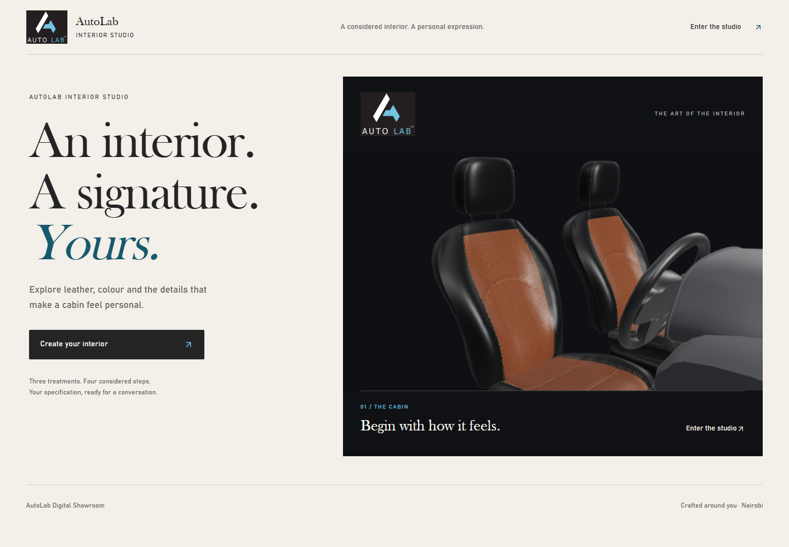
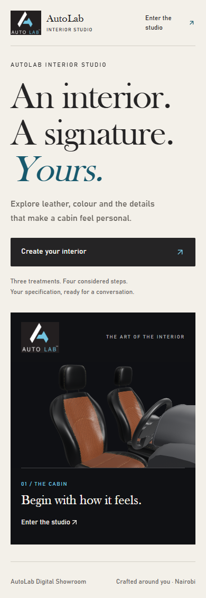
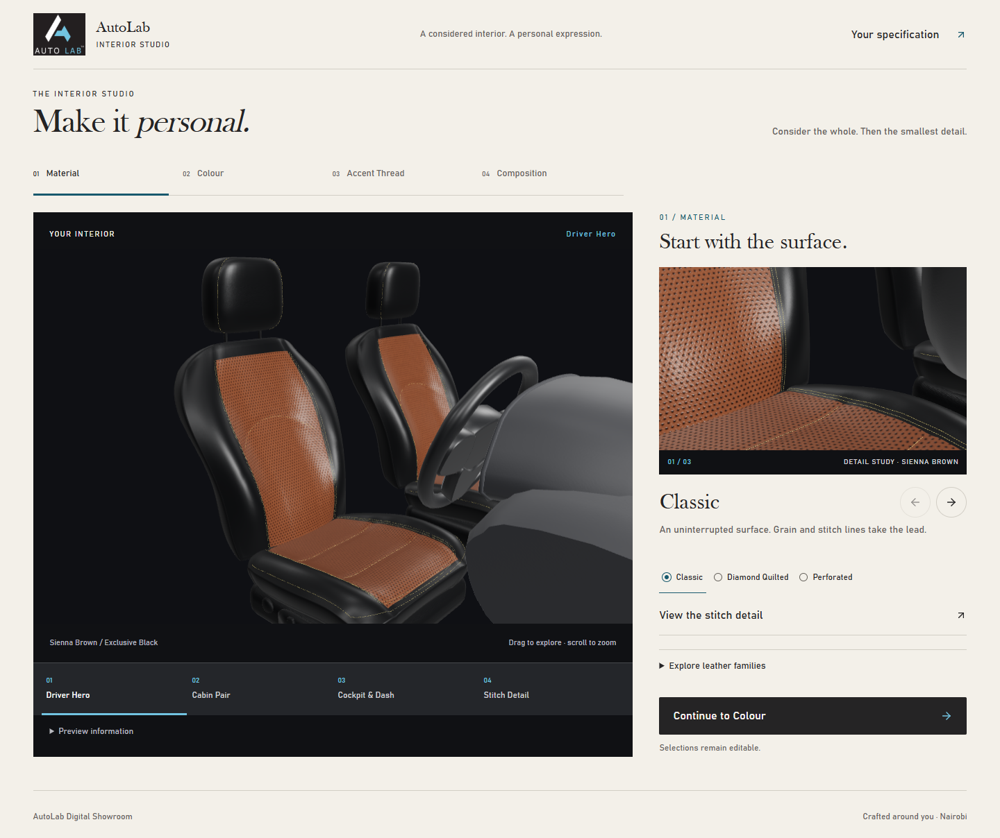
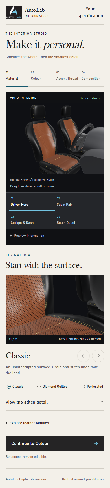
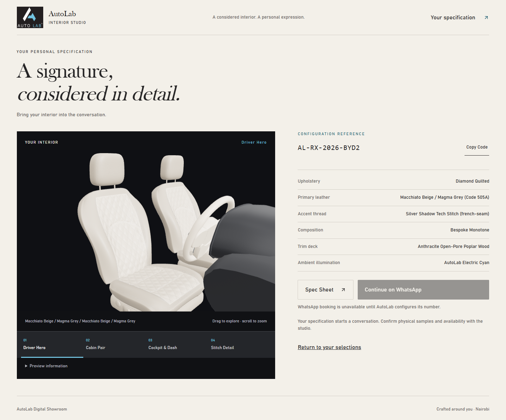
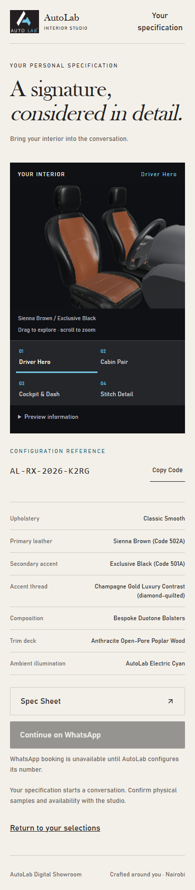
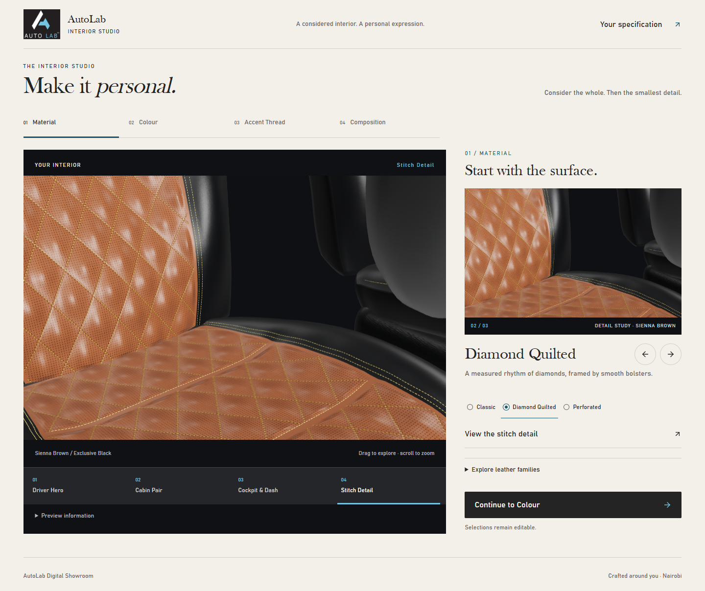
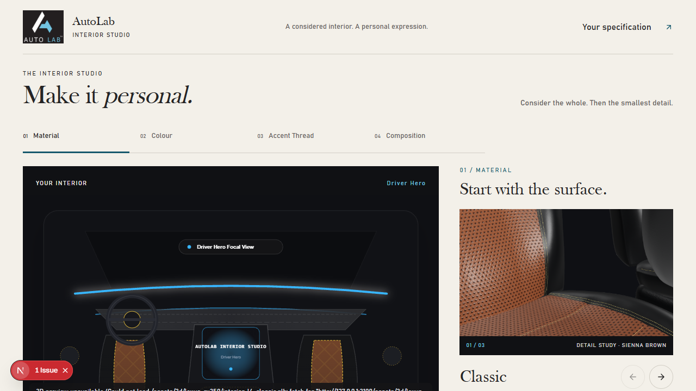
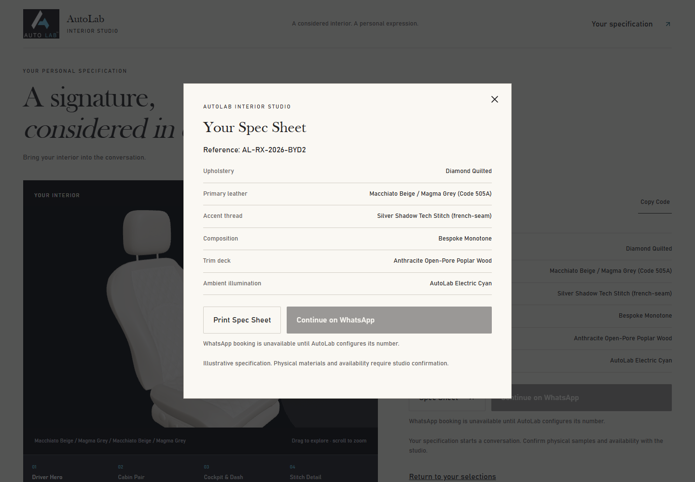

AUTOLAB INTERIOR STUDIO · LOCAL OWNER REVIEW · 5 NOVEMBER 2026
The approved direction.
The working showroom.
Actual screenshots and recording from the optimized Next.js application. The live model responds to customer selections. Technical checks passed; visual acceptance remains with the owner.
Validation, commits and limitations · Download the recording · Approved R1 reference
102 unit tests · 16 distinct browser tests across documented runs · four unchanged-asset gates · one live canvas · no deployment
01 / Welcome




02 / Live configurator




03 / Working interactions
Welcome → live stage → three treatments → stitch detail → colour → thread → composition → specification and Spec Sheet. Original timing retained, including loading. No external WhatsApp message sent. The 25 fps recording rate is not a viewer FPS measurement.
04 / Your specification




05 / Details and recovery





